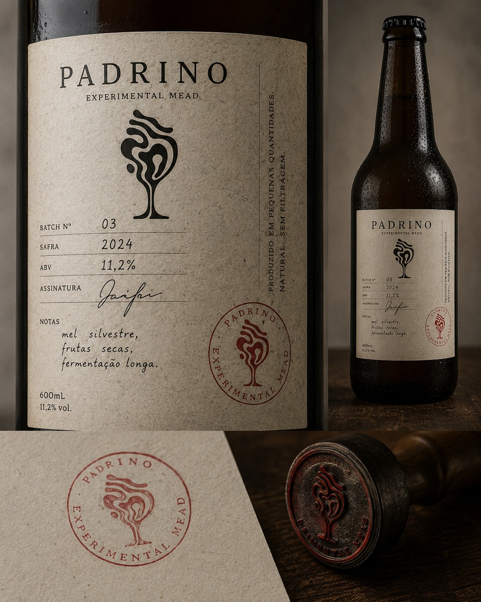

Carregando registros biológicos...
Descrição...
Notas de observação...
BASE: Mosto de cana-de-açúcar de corte manual, fermentação selvagem.
ADIÇÕES: Infusão a frio de botânicos nativos, repouso em tosta forte.
ESTÁGIO:
ANÁLISE SENSORIAL: O vigor da cana crua cortado pelo amargor terroso de raízes frescas. O final traz a adstringência profunda da madeira brasileira tostada. Uma expressão selvagem e destilada da terra.

BASE: Mel silvestre cru de florada de jabuticabeira.
ADIÇÕES: Água de poço artesiano, maturação Sur Lie (8 meses).
ESTÁGIO:
ANÁLISE SENSORIAL: Textura licorosa e densa. O dulçor inicial do mel silvestre é subitamente interceptado por uma acidez vibrante e notas tânicas que remetem à casca da jabuticaba madura e chão de floresta úmido.